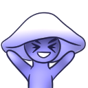

Case study / Custom community bot
George
A Discord bot shaped around the people, games, and workflows of A Mythical Tale.

The project
Made for one community—not everyone.
George supports the A Mythical Tale community, based around AltaVR titles A Township Tale and Reave. Its features mirror the server’s own activities, giving members useful game-community tools alongside staff moderation and support.
Core features
Community systems under one roof.
- Auto-moderation
- Ticketing
- Levelling
- Missions
- Bounties
- Marketplace listings
- Player profiles
- Auto-responders
Command surface
Selected slash commands.
/claim · /set-bounty · /close-bountyRun the community bounty workflow./create-listingList an in-game item for sale./daily · /weeklyReceive time-based missions./profileView your own or another member’s profile./open-ticketStart a private conversation with the moderation team.
See it in context
Visit A Mythical Tale.
Join the community where George’s features are used.
Join the server ↗